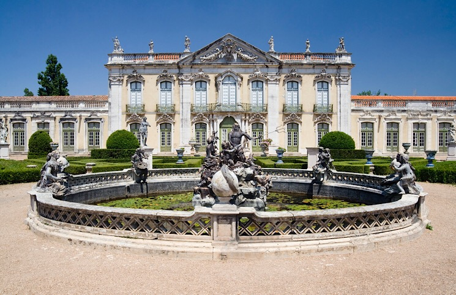
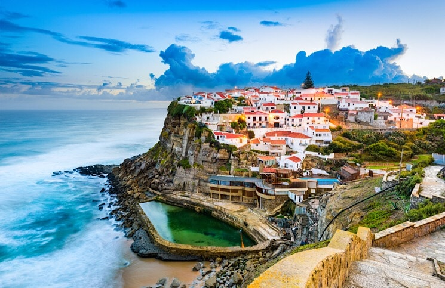
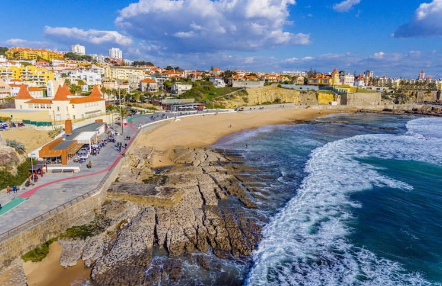

PASSEIOS
PASSEIOS DE TREM A PARTIR DE LISBOA EM PORTUGAL
O PALÁCIO DE QUELUZ
O Palácio de Queluz é frequentemente comparado com o Palácio de Versailles e diferenças à parte, é uma belezura que deve constar no seu roteiro. Construído no século XVIII e XIX ele tem em sua arquitetura representações do estilo barroco, rococó e neoclássico e serviu de residência para a família real portuguesa. Para visitar o Palácio de Queluz basta pegar o trem que vai para Sintra saindo da estação do Rossio e em dezessete minutos você estará no seu destino. Para visitar os jardins do palácio o ingresso custa 5 euros, e para visitar os jardins mais o palácio o ingresso custa 10 euros.
CIDADE DE SINTRA
O trem direto para Sintra sai da estação do Rossio e a viagem dura quarenta minutos. Para conhecer a cidade, há várias opções. Existem empresas de turismo que fazem as paradas e garantem que você explore o que Sintra tem de melhor, mas há também um ônibus turístico que sai da estação de trem e também percorre o circuito turístico. Existem duas rotas. As principais atrações de Sintra são o Palácio de Sintra, o Castelo dos Mouros, Parque e Palácio da Pena e a Quinta da Regaleira. Cada atração tem um valor de ingresso distinto, mas comprando os ingressos juntos há um desconto.
PORTO DE CASCAIS
Cascais é um porto de pescadores histórico e uma das cidades mais procuradas por lisboetas e viajantes no verão. O trem de Lisboa para Cascais sai da estação Cais do Sodré. A costa de Cascais é belíssima e há vários pontos interessantes na cidade como a Baía de Cascais, a caminhada até a Boca do Inferno e o Cabo da Roca.

Foto: Foto do Palacio de queluz

Foto: Cidade de Sintra

Foto: Porto de Cascais